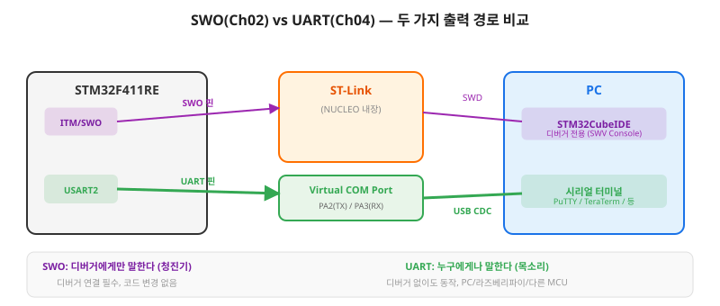
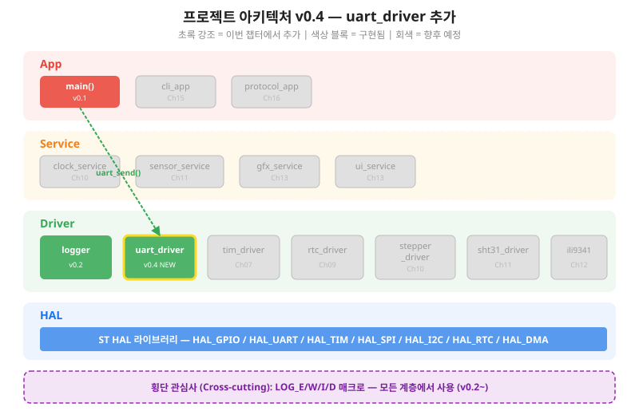
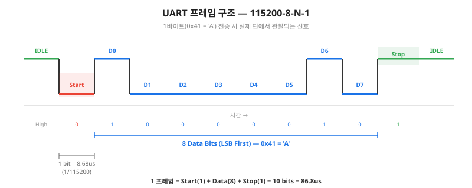
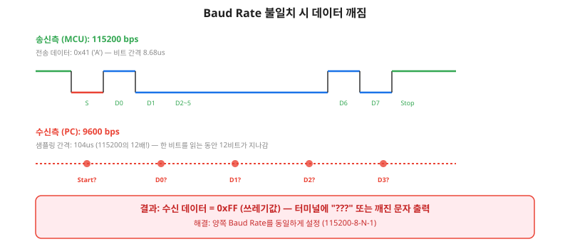
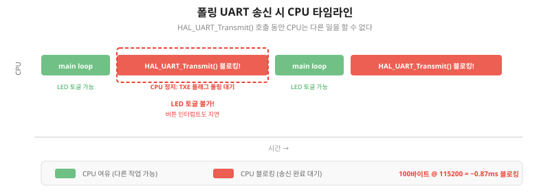
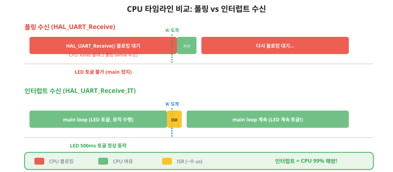
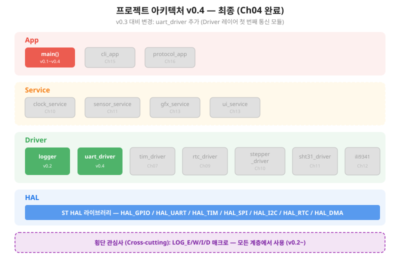

MCU에게 목소리를 준다 — UART 시리얼 통신으로 PC와 데이터를 주고받는 Driver를 완성한다
잠깐, 여기까지 온 여러분의 성과를 확인하고 갑시다. Ch01에서 버튼 인터럽트로 LED를 제어하고, Ch02에서 로그 시스템을 구축하고, Ch03에서 4계층 아키텍처 설계도까지 완성했습니다. 3개 챕터, 3개의 핵심 역량을 이미 갖추었습니다. 이제 그 역량 위에 네 번째 블록을 쌓을 차례입니다.
Ch02에서 우리는 이미 MCU 내부를 들여다보는 데 성공했습니다.
LOG_I("버튼 눌림!") 한 줄이면 STM32CubeIDE SWV Console에 메시지가 나타났습니다.
그렇다면 Ch04에서 또 "출력"을 배우는 이유가 뭘까요?
답은 범위입니다. Ch02의 SWO(Serial Wire Output)는 디버거에게만 말하는 청진기입니다. ST-Link가 연결되어 있어야만 작동하고, 디버깅 세션 밖에서는 침묵합니다.
Ch04의 UART(Universal Asynchronous Receiver/Transmitter, 범용 비동기 송수신기)는 누구에게나 말하는 목소리입니다. PC는 물론, 라즈베리파이, 블루투스 모듈, 다른 MCU — UART를 이해하는 모든 장치와 대화할 수 있습니다. 디버거 없이도 동작합니다.

NUCLEO-F411RE 보드에서 두 경로는 물리적으로 같은 USB 케이블을 공유하지만, 내부에서는 완전히 다른 통로를 사용합니다. SWO는 SWD(Serial Wire Debug) 디버깅 채널을, UART는 ST-Link의 Virtual COM Port(가상 시리얼 포트)를 경유합니다.
이 챕터가 끝나면 두 가지가 바뀝니다:
Ch03에서 우리는 4계층 아키텍처를 설계하고, Driver 레이어에 uart_driver라는 회색 블록을 배치했습니다.
오늘 그 회색 블록이 초록색으로 칠해집니다.
Driver 레이어의 첫 번째 통신 모듈을 직접 구현하는 것입니다.

Ch03의 레스토랑 비유를 떠올려 보세요.
요리사(Driver)는 홀 매니저(App)에게 메뉴판(인터페이스)을 보여줍니다.
홀 매니저는 메뉴판만 보면 되지, 가스레인지 조작법(HAL)을 알 필요가 없습니다.
uart_driver.h가 바로 그 메뉴판입니다.
/* uart_driver.h — 공개 인터페이스 (메뉴판) */
typedef enum {
UART_OK = 0, UART_ERROR, UART_BUSY, UART_TIMEOUT
} uart_status_t;
void uart_driver_init(void);
uart_status_t uart_send(const uint8_t *buf, uint16_t len);
uart_status_t uart_send_string(const char *str);
uint16_t uart_available(void);
uint8_t uart_read_byte(void);
App 레이어는 uart_send_string("Hello")만 호출하면 됩니다.
내부가 폴링인지 인터럽트인지 DMA인지 모릅니다.
이 인터페이스는 Ch06에서 DMA로 전환해도 변경 없이 유지됩니다.
이것이 Ch03에서 배운 레이어 분리의 실질적 가치입니다.
uart_send()를 호출하면 실제로 어떤 일이 일어나는지, 4계층을 관통하는 흐름을 시퀀스 다이어그램으로 확인합니다.
Ch03에서는 시퀀스 다이어그램을 "읽었"지만, Ch04부터는 직접 "그릴" 수 있어야 합니다.
이 챕터를 완료하면 다음을 할 수 있습니다.
UART 통신을 한 문장으로 요약하면: "미리 약속한 속도로 한 글자씩 주고받는 비동기 통신"입니다. I2C나 SPI처럼 별도의 클럭 신호선이 없습니다. 대신 양쪽이 "1초에 몇 비트를 보내자"고 속도를 약속합니다. 이 약속이 Baud Rate(보 레이트)입니다.
UART는 한 번에 1바이트(8비트)를 프레임으로 감싸서 전송합니다. 우리가 사용할 설정은 115200-8-N-1입니다.

115200-8-N-1을 해석하면: Baud Rate 115200bps, Data 8비트, Parity None, Stop 1비트. 1프레임 = 1(Start) + 8(Data) + 1(Stop) = 10비트. 따라서 초당 최대 전송 가능 바이트 = 115200 / 10 = 11,520 바이트/초입니다.
MCU는 115200bps로 보내는데 PC 터미널이 9600bps로 읽으면 어떻게 될까요? 수신측은 실제 비트보다 12배 느리게 샘플링하므로, 한 비트를 읽는 동안 12비트가 지나가 버립니다. 결과는 깨진 문자(쓰레기값)입니다.

이론을 배웠으니 바로 하드웨어를 설정합니다. NUCLEO-F411RE 보드에서 PC 통신에 사용하는 USART2의 CubeMX 설정입니다.
NUCLEO 보드에는 ST-Link가 내장되어 있고, ST-Link의 Virtual COM Port(가상 시리얼 포트)가 USART2에 하드와이어드(물리적으로 연결)되어 있습니다. 별도의 USB-UART 변환 모듈 없이 USB 케이블 하나로 PC와 시리얼 통신이 가능한 이유입니다.
이 두 핀은 ST-Link에 고정 연결되어 있으므로 다른 용도로 사용할 수 없습니다. CubeMX에서 USART2를 Asynchronous 모드로 활성화하면 자동으로 PA2/PA3가 배정됩니다.
Asynchronous로 선택1152008 BitsNone1USART2 global interrupt → Enable 체크 (§4.4 인터럽트 수신에 필요)MX_USART2_UART_Init() 자동 생성 확인
CubeMX 설정을 마쳤으니 코드를 작성합니다.
가장 간단한 방법부터: HAL_UART_Transmit()으로 문자열을 PC에 보내 봅시다.
HAL_UART_Transmit()은 폴링(Polling, 주기적 확인) 방식의 송신 함수입니다.
함수를 호출하면 모든 바이트가 전송될 때까지 CPU가 멈춰서 기다립니다.
이것을 블로킹(Blocking, 차단)이라고 합니다.
/* ch04_01_uart_polling_echo.c — 첫 UART 출력 */
extern UART_HandleTypeDef huart2;
/* 문자열 송신 (폴링 방식) */
void uart_send_string(const char *str)
{
uint16_t len = (uint16_t)strlen(str);
HAL_StatusTypeDef status;
status = HAL_UART_Transmit(&huart2,
(uint8_t *)str, len,
100); /* 타임아웃 100ms */
if (status != HAL_OK) {
LOG_W("UART TX 실패: status=%d", status);
}
}
/* main()에서 호출 */
uart_send_string("Hello UART!\r\n");
HAL_UART_Transmit()의 파라미터:
&huart2: CubeMX가 생성한 USART2 핸들(uint8_t *)str: 송신할 데이터 포인터 (HAL은 uint8_t* 요구)len: 송신 바이트 수100: 타임아웃(ms). 이 시간 내에 전송 완료되지 않으면 HAL_TIMEOUT 반환폴링의 문제를 직접 확인해 봅시다. UART 송신 코드와 LED 500ms 토글 코드를 함께 넣으면:
/* 폴링 수신 — 블로킹 체험 */
uint32_t last_led = 0; /* LED 토글 타이밍 */
while (1)
{
/* UART 수신 대기 (최대 1초 블로킹!) */
uint8_t rx = 0;
HAL_UART_Receive(&huart2, &rx, 1, 1000);
if (rx != 0) {
HAL_UART_Transmit(&huart2, &rx, 1, 10);
LOG_D("에코: '%c'", rx);
}
/* LED 토글 — 위 코드가 1초 블로킹하므로
* 실제 토글 주기는 500ms가 아니라 ~1.5초! */
uint32_t now = HAL_GetTick();
if (now - last_led >= 500) {
HAL_GPIO_TogglePin(GPIOA, GPIO_PIN_5);
last_led = now;
LOG_D("LED 토글 (now=%lu)", now);
}
}
HAL_UART_Receive()가 1초 동안 CPU를 잡고 있으므로,
LED 토글 코드는 1초 후에야 실행됩니다.
LED가 500ms 주기로 깜빡이지 않고, 뚝뚝 끊기며 깜빡입니다.
이것이 폴링의 한계입니다.

매번 HAL_UART_Transmit()을 직접 호출하는 것은 불편합니다.
C 표준 printf()를 UART로 연결하면 훨씬 편리합니다.
방법은 간단합니다: newlib의 저수준 출력 함수 _write()를 오버라이드합니다.
/* printf → UART 리다이렉트 */
int _write(int file, char *ptr, int len)
{
(void)file; /* stdout/stderr 구분 없이 UART */
HAL_UART_Transmit(&huart2,
(uint8_t *)ptr, (uint16_t)len,
100);
return len;
}
/* 이제 printf 사용 가능! */
printf("uptime=%lus LED=%s\r\n",
HAL_GetTick() / 1000,
led_state ? "ON" : "OFF");
_write()는 printf()가 내부적으로 호출하는 함수입니다.
STM32CubeIDE 프로젝트에서는 syscalls.c에 __weak로 선언되어 있으므로,
main.c에서 같은 이름으로 재정의하면 됩니다.
§4.3에서 폴링의 한계를 체감했습니다. UART 수신을 기다리느라 LED가 멈추는 문제를 해결합니다. 해법은 인터럽트(Interrupt, 하드웨어 알림)입니다. Ch01에서 버튼 EXTI 인터럽트를 사용했던 것을 기억하세요. UART에도 동일한 원리를 적용합니다.
HAL_UART_Receive_IT()는 "다음 1바이트가 오면 알려달라"는 모닝콜 예약입니다.
예약 후 CPU는 main loop를 자유롭게 실행합니다.
바이트가 도착하면 하드웨어가 알려주고(RXNE 인터럽트), 콜백 함수가 호출됩니다.코드를 보기 전에, 인터럽트 수신의 전체 흐름을 시퀀스 다이어그램으로 확인합니다. 핵심은 콜백 마지막에 Receive_IT를 다시 호출하는 루프입니다.
흐름을 단계별로 정리합니다:
HAL_UART_Receive_IT(&huart2, &rx_byte, 1) — "1바이트 오면 알려달라" 예약rx_byte에 저장HAL_UART_Receive_IT() 재등록/* 인터럽트 수신 핵심 패턴 */
static volatile uint8_t g_rx_byte; /* ISR 수신 버퍼 */
/* HAL 콜백 — RXNE 인터럽트 처리 후 자동 호출 */
void HAL_UART_RxCpltCallback(UART_HandleTypeDef *huart)
{
if (huart->Instance == USART2) {
/* 1) 수신된 바이트를 버퍼에 저장 */
uint16_t next = (g_rx_head + 1) % RX_BUF_SIZE;
if (next != g_rx_tail) {
g_rx_buf[g_rx_head] = g_rx_byte;
g_rx_head = next;
}
/* 2) ★ 다음 1바이트 수신 재등록 ★ */
HAL_UART_Receive_IT(&huart2,
(uint8_t *)&g_rx_byte, 1);
}
}
/* 초기화 시 최초 1회 등록 */
HAL_UART_Receive_IT(&huart2,
(uint8_t *)&g_rx_byte, 1);
가장 중요한 줄은 콜백 마지막의 HAL_UART_Receive_IT()입니다.
이 줄이 없으면 첫 1바이트만 수신되고, 이후에는 아무리 PC에서 보내도 MCU가 반응하지 않습니다.
이것이 가장 흔한 실수이며, 디버깅에 30분 이상 걸리는 경우가 많습니다.
/* main loop — 인터럽트 덕분에 블로킹 없음! */
while (1)
{
/* 1) 수신 데이터 확인 (비블로킹) */
if (uart_available() > 0) {
uint8_t rx = uart_read_byte();
LOG_D("수신: '%c'", rx);
switch (rx) {
case '1':
HAL_GPIO_WritePin(GPIOA, GPIO_PIN_5,
GPIO_PIN_SET);
printf("[CMD] LED ON\r\n");
break;
case '0':
HAL_GPIO_WritePin(GPIOA, GPIO_PIN_5,
GPIO_PIN_RESET);
printf("[CMD] LED OFF\r\n");
break;
}
}
/* 2) LED 토글 — 인터럽트 덕분에 멈추지 않음! */
uint32_t now = HAL_GetTick();
if (now - last_led >= 500) {
HAL_GPIO_TogglePin(GPIOA, GPIO_PIN_5);
last_led = now;
}
}
폴링과의 핵심 차이: uart_available()은 버퍼만 확인하므로 즉시 반환합니다.
CPU가 멈추지 않으니 LED 토글도, 센서 읽기도, 모터 제어도 동시에 할 수 있습니다.

§4.3~§4.4에서 폴링 송신과 인터럽트 수신을 구현했습니다.
지금까지의 코드는 main.c에 직접 작성했습니다.
Ch03에서 배운 아키텍처 원칙을 적용할 때입니다:
UART 관련 코드를 uart_driver.c/h로 분리하여 Driver 레이어에 배치합니다.
Ch03의 레스토랑 비유를 다시 꺼냅니다. 요리사(Driver)가 손님(App)의 주문서(인터페이스)만 받아서 처리합니다. 요리사가 가스레인지(HAL_UART 폴링)를 인덕션(HAL_UART DMA, Ch06)으로 바꿔도, 주문서는 변경되지 않습니다. 이것이 Driver 레이어를 분리하는 이유입니다.
/* uart_driver.h — 공개 인터페이스
*
* App은 이 헤더만 include한다.
* HAL 헤더(stm32f4xx_hal.h)를 직접 include하지 않는다.
*/
#ifndef UART_DRIVER_H
#define UART_DRIVER_H
#include <stdint.h>
typedef enum {
UART_OK = 0,
UART_ERROR,
UART_BUSY,
UART_TIMEOUT
} uart_status_t;
void uart_driver_init(void);
uart_status_t uart_send(const uint8_t *buf, uint16_t len);
uart_status_t uart_send_string(const char *str);
uint16_t uart_available(void);
uint8_t uart_read_byte(void);
#endif /* UART_DRIVER_H */
주목할 점: 이 헤더에는 stm32f4xx_hal.h가 없습니다.
UART_HandleTypeDef도 없습니다.
상위 레이어(App)는 HAL의 존재를 모릅니다.
이것이 올바른 인터페이스 설계입니다.
/* uart_driver.c — 내부 구현 (Driver 레이어)
* HAL 상세를 캡슐화하여 상위에 숨긴다 */
#include "uart_driver.h"
#include "main.h" /* HAL 포함 — Driver만 HAL을 안다 */
#include "log.h"
#include <string.h>
extern UART_HandleTypeDef huart2;
#define RX_BUF_SIZE 128
static volatile uint8_t s_rx_byte;
static volatile uint8_t s_rx_buf[RX_BUF_SIZE];
static volatile uint16_t s_rx_head = 0;
static volatile uint16_t s_rx_tail = 0;
void uart_driver_init(void)
{
s_rx_head = 0;
s_rx_tail = 0;
HAL_UART_Receive_IT(&huart2,
(uint8_t *)&s_rx_byte, 1);
LOG_I("uart_driver 초기화 완료");
}
uart_status_t uart_send(const uint8_t *buf,
uint16_t len)
{
if (buf == NULL || len == 0) {
return UART_ERROR;
}
HAL_StatusTypeDef s;
s = HAL_UART_Transmit(&huart2,
(uint8_t *)buf, len, 100);
return (s == HAL_OK) ? UART_OK : UART_ERROR;
}
uart_status_t uart_send_string(const char *str)
{
if (str == NULL) return UART_ERROR;
return uart_send((const uint8_t *)str,
(uint16_t)strlen(str));
}
uint16_t uart_available(void)
{
return (s_rx_head - s_rx_tail + RX_BUF_SIZE)
% RX_BUF_SIZE;
}
uint8_t uart_read_byte(void)
{
if (s_rx_head == s_rx_tail) return 0;
uint8_t b = s_rx_buf[s_rx_tail];
s_rx_tail = (s_rx_tail + 1) % RX_BUF_SIZE;
return b;
}
void HAL_UART_RxCpltCallback(
UART_HandleTypeDef *huart)
{
if (huart->Instance != USART2) return;
uint16_t next;
next = (s_rx_head + 1) % RX_BUF_SIZE;
if (next != s_rx_tail) {
s_rx_buf[s_rx_head] = s_rx_byte;
s_rx_head = next;
}
HAL_UART_Receive_IT(&huart2,
(uint8_t *)&s_rx_byte, 1);
}/* main.c — App 레이어 (v0.4) */
#include "uart_driver.h" /* HAL 헤더 불필요! */
#include "log.h"
int main(void)
{
HAL_Init();
SystemClock_Config();
MX_GPIO_Init();
MX_USART2_UART_Init();
uart_driver_init(); /* Driver 초기화 */
LOG_I("=== 시스템 v0.4 시작 ===");
uart_send_string("System v0.4 Ready\r\n");
uint32_t last_status = 0;
uint32_t btn_count = 0;
while (1)
{
/* UART 명령 수신 처리 */
if (uart_available() > 0) {
uint8_t cmd = uart_read_byte();
switch (cmd) {
case 'S': /* 상태 출력 */
printf("[STATUS] uptime=%lus\r\n",
HAL_GetTick() / 1000);
break;
case 'L': /* LED 토글 */
HAL_GPIO_TogglePin(GPIOA, GPIO_PIN_5);
printf("[CMD] LED toggled\r\n");
break;
}
}
/* 1초 주기 시스템 상태 자동 출력 */
uint32_t now = HAL_GetTick();
if (now - last_status >= 1000) {
printf("[AUTO] %lus alive\r\n",
now / 1000);
last_status = now;
}
}
}
main.c에서 #include "uart_driver.h"만 하면 됩니다.
HAL_UART_Transmit, UART_HandleTypeDef, USART2 — 이런 HAL 상세가 App에 노출되지 않습니다.
이 챕터에서 프로젝트 아키텍처에 uart_driver가 추가되었습니다.
Ch03에서 회색이었던 Driver 레이어의 UART 블록이 초록색으로 변합니다.

이 챕터에서 여러분은 HAL 함수를 호출하는 사용자에서 Driver 모듈을 설계하는 설계자로 한 단계 성장했습니다.
HAL_UART_Transmit()을 직접 쓰는 것이 아니라, uart_send()라는 인터페이스를 정의하고 그 뒤에 HAL을 숨겼습니다.
Ch05부터는 이 설계 능력이 매 챕터에서 반복됩니다.
목표: UART로 PC에 시스템 상태를 출력하고, PC에서 간단한 명령을 수신하여 LED를 제어한다.
환경: STM32CubeIDE, NUCLEO-F411RE, 시리얼 터미널 (PuTTY/TeraTerm/Arduino Serial Monitor)
USART2: Asynchronous, 115200-8-N-1. NVIC: USART2 global interrupt → Enable. PA5: GPIO_Output (LED2). Generate Code.
프로젝트에 uart_driver.c와 uart_driver.h를 추가합니다.
main.c에서 #include "uart_driver.h"를 추가하고,
uart_driver_init()를 MX_USART2_UART_Init() 뒤에서 호출합니다.
§4.5의 main.c 코드를 참고하여 작성합니다. PC에서 'S' → 상태 출력, 'L' → LED 토글 명령을 구현합니다.
예상 결과: 시리얼 터미널에 1초 주기 상태 메시지가 출력되고, 키 입력에 반응합니다.
터미널 출력 예시:
[AUTO] 1s alive
[AUTO] 2s alive
[STATUS] uptime=3s
[CMD] LED toggled
[AUTO] 4s aliveHAL_UART_Receive_IT()를 반드시 재호출. 빠뜨리면 첫 1바이트만 수신.uart_driver.h에 HAL 상세 없음. 폴링→인터럽트→DMA 전환 시 인터페이스 불변.
이 챕터에서 프로젝트 아키텍처에 uart_driver가 추가되어 v0.4로 업그레이드되었습니다.
Driver 레이어의 첫 번째 통신 모듈이 완성되었습니다.
Ch03에서 회색이었던 블록이 이제 초록색입니다.
HAL_UART_Receive_IT() 재등록을 주석 처리하면 어떤 증상이 나타나는지 서술하시오.
void HAL_UART_RxCpltCallback(UART_HandleTypeDef *huart)
{
rx_buf[idx++] = rx_byte;
// HAL_UART_Receive_IT(huart, &rx_byte, 1);
}uart_send()는 폴링으로 구현되어 있다.
송신 완료를 인터럽트로 처리하려면 어떤 HAL 함수를 사용해야 하며,
어떤 콜백이 호출되는지 조사하시오.
(힌트: HAL_UART_Transmit_IT, HAL_UART_TxCpltCallback)
uart_driver.h에 #include "stm32f4xx_hal.h"를 추가하면
Ch03의 어떤 아키텍처 원칙을 위반하는지 설명하고, 그 결과 어떤 문제가 발생할 수 있는지 서술하시오.